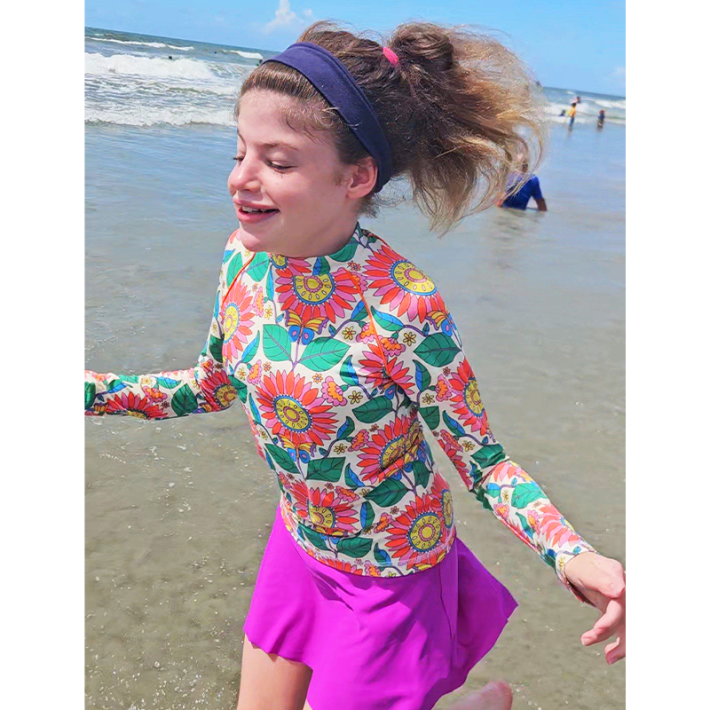
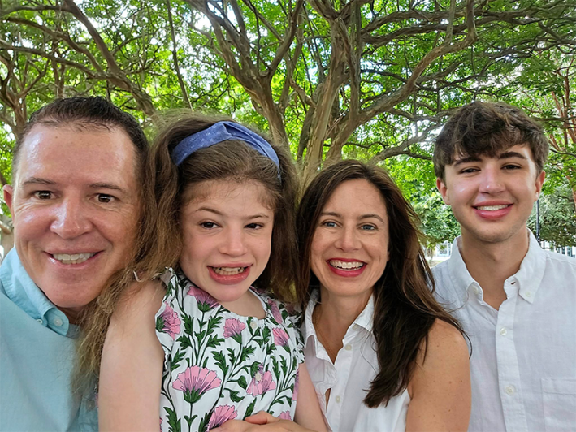

After Cara and Glenn O’Neill learned of their daughter Eliza’s death sentence, they went to the beach. Before they left, Eliza and her father ran along the sand, holding hands. It was hard to stop, Glenn says, to turn back, pile into the car, and face the inevitable.
The O’Neills had wanted to pretend just a little bit longer. “We knew what we were facing,” says Cara, who is trained as a pediatrician. They even kept the news from Eliza’s 6-year-old brother Beckham. But after they got home that July day, they began dialing friends and family to deliver the news: Eliza, who was 3, had a rare disease called Sanfilippo syndrome. Also known as children’s Alzheimer’s, Sanfilippo causes a loss of learned skills such as speech and movement over time. Children become so hyperactive that their parents often can’t sleep, staying up into the dawn to keep their kids safe. Eliza wasn’t expected to live past age 15.
The O’Neills soon posted a wrenching video of their daughter on a GoFundMe page, headlined “Saving Eliza.” On camera, Eliza seems blissfully unaware of what is coming, her eyes crinkled with joy, her ponytail swaying as she plays outside. Glenn recounts how much he and Cara had wanted a daughter, how difficult the diagnosis was for them. Cara describes what it will mean for Eliza. “If the money doesn’t come in time, she’ll stop speaking within the next six months,” Cara says. “She will stop walking within the next two years, stop being able to feed herself in the next three to four years. She will develop seizures and movement disorders, experience a lot of pain and suffering, and then she’ll die.”
Within eight months of posting the video, the O’Neills’ new nonprofit, the Cure Sanfilippo Foundation, collected $2 million from friends, family, and complete strangers. The couple was determined to find a cure.
Eliza wasn’t expected to live past age 15.
But they knew it would take more than a couple of millions to move the needle on Sanfilippo.
In the world of rare disease, it’s often the families who drive medical research forward. Though more than 7,000 rare diseases exist, collectively affecting more than 300 million people worldwide, rare diseases are, by definition, rare. The rarest of them can affect as few as one in 100 million people.
Due to profit incentives and the scale of impact, large pools of funding from pharma companies, foundations, and even federal institutions like the NIH tend to go to diseases that affect large populations—with a few exceptions.
When she looks back now, Cara says there were subtle signs of Sanfilippo she hadn’t known to look for: Eliza’s head was especially large for her age, she frequently had loose stools and ear infections, and there were mild developmental delays, particularly in her speech. It was only around the age of 3, when Eliza was transitioning from the toddler group to the 3-year-old group at daycare, that it became apparent that there were significant differences between Eliza and her peers. Eliza’s caregivers noticed that she was having trouble with natural conversation and wasn’t playing normally with the other children. “She just had difficulty in communicating frustration, so she would push or grab,” Cara says. She was constantly on the move.
Eliza started working with speech, physical, and occupational therapists on a weekly basis and Cara was optimistic at first that this special attention would close the developmental gap—but she saw it widen instead. Six months in, Eliza’s school evaluated her for autism and diagnosed her with the condition. Then, on the suggestion of a colleague who was a geneticist, Cara had Eliza’s urine, and later her DNA, tested for a group of inherited disorders known as mucopolysaccharidoses (MPS) disorders. MPS disorders feature deficient enzymes in a person’s lysosomes, the organelles in cells that break down cellular garbage and perform other critical functions. A single mutation pointed to Sanfilippo, also known as MPS III.
It was devastating news. About one in every 70,000 babies are estimated to be born with the condition, which causes cognitive unraveling similar to that seen in adults with Alzheimer’s. A child will suddenly forget their favorite bedtime lullaby, the name of the family dog, the morning routine. These behavioral and cognitive symptoms are accompanied by measurable neuroanatomical changes: cortical and cerebellar atrophy, ventricular enlargement, neuronal loss visible on neuroimaging, and aggregation of tau, α-synuclein, and amyloid-β proteins. Other brain changes occur as well, such as mitochondrial dysfunction, oxidative stress, impaired autophagy, and neuroinflammation. All of these same changes are at work not just in Alzheimer’s but in Parkinson’s disease and Huntington’s disease, which together affect millions of people in the United States alone every year.

BEACH GIRL:Eliza is now 16 years old, a year past her own life expectancy. The family’s halting conversations with her have revealed that her mind is more intact than they thought. She understands colors. She remembers the alphabet. And she still loves the beach. Credit: Courtesy of the O’Neills.
Discovered in the early 1960s by Sylvester Sanfilippo and colleagues at the University of Minnesota, Sanfilippo occurs in four closely related forms. Each involves defects in a different enzyme that normally helps to break down a carbohydrate called heparan sulfate, which attaches to proteins involved in a multitude of functions throughout the body. Without the functional enzyme, partially broken-down heparan sulfate builds up to toxic levels in a child’s brain cells. Researchers are still piecing together exactly how this toxic garbage in the brain causes the symptoms of the disease. One 2024 study, for example, found that the buildup may induce immune cells in the brain known as microglia to increase chemical signals that lead to inflammation and reduce the availability of proteins that promote neuronal development. Eliza has Sanfilippo subtype A, which is caused by mutations in the gene for the sulfamidase enzyme. Hers is a severe, faster-progressing form of the subtype.
Because Sanfilippo has a known genetic cause, relatively uniform rapid progression, and major central nervous system involvement, it offers a unique window into neurodegenerative disease more broadly—particularly the effects of lysosomal failure on the brain. Studying it helps scientists understand how disrupted cellular activity cascades into widespread brain dysfunction over time.
In a 2011 study, for example, a team led by University of Cambridge researchers found a buildup of α-synuclein—a feature of Parkinson’s disease—in the brains of two patients with Sanfilippo. The study’s authors suggested that NAGLU, the gene at fault in one subtype of the disease, might also play a role in susceptibility to Parkinson’s, a connection borne out by subsequent research. Aggregations of tau protein, a signature of Alzheimer’s and certain other neurodegenerative diseases, have also been found in the brains of mice with the gene mutations behind Sanfilippo.
Through research on Sanfilippo, “we’re understanding things about these cellular processes like autophagy and other cellular breakdown pathways that have long been studied in Alzheimer’s” and other neurodegenerative diseases, Cara says. “Knowing that this is a primary disease target in Sanfilippo allows us to learn what works there, and then they can translate over into the other larger diseases.”
A decade ago, an early gene-therapy trial for Sanfilippo A inspired hopes that a cure might soon be within reach for kids who were diagnosed early. But the path to viable treatment has been slow and messy.
Following her daughter’s diagnosis, Cara quickly dug into the scientific literature, reading all the papers she could find on Sanfilippo. Her medical training helped: She had studied at West Virginia University School of Medicine and began practicing as a pediatrician in 2004 (she now directs a travel health group). Cara hoped to find emerging therapies, or at least known mechanisms of the disease that could be targeted. She soon learned about a researcher at Nationwide Children’s Hospital in Columbus, named Haiyan Fu, who had done important foundational work on the disease together with her colleagues. Fu had identified a potential gene therapy with her husband, Douglas McCarty, that appeared to be able to cross the blood-brain barrier and induce brain cells to produce a functional lysosomal enzyme. So Cara reached out to Fu to talk with her about her research. She learned that millions of dollars would be needed to run the first clinical trial.
She had lost the ability to speak except for a few words.
Meanwhile, Glenn, too, was giving himself a crash course—in his case, about fundraising. The infusion of money from the video featuring Eliza gave the Cure Sanfilippo Foundation a strong start, but it wasn’t enough. Glenn remembers initially feeling uncomfortable asking for money. But something he read in a book on fundraising helped change his perspective. “The line said, ‘donors donate,’ ” he says. “They’ve seen the work that you’re doing, and they’ve made a choice.” His experiences have borne that out. In one case, the foundation ran a campaign that was still short of its goal at 10 p.m. on the final day. It was then that Glenn got a call from a stranger who said he and his wife had come across a video of Eliza and decided to contribute the $30,000 needed to finish the campaign. “He was thanking me,” Glenn says.
“Those foundations are very, very essential,” to her work, says Fu. Without them, there just isn’t enough money to carry out this kind of research, she says. Family participation is also, of course, essential to the clinical trials that move scientific findings toward FDA approval.
Along with fundraising, the O’Neills enrolled Eliza in a study at Nationwide Children’s where Fu worked, a commitment that involved driving to Ohio three times over the course of a year from their home state of South Carolina so that doctors could monitor Eliza’s symptoms and track how they changed over time. This would help establish a baseline marker of disease progression that could be used in future clinical trials to measure whether a drug was working or not.

FAMILY AFFAIR:Eliza’s parents helped fund research for the gene therapy she and other kids with Sanfilippo received. It couldn’t reverse the damage already done to her neurons, but it allowed her to sleep at night and live into her teens. Families are often the ones who drive rare disease research forward. Credit: Courtesy of the O’Neills.
That year, the family also went into isolation. They wanted to keep Eliza eligible for a possible trial with Fu’s gene therapy, though they had no guarantee she would be selected. Eliza had already been tested for antibodies to AAV9, the virus co-opted as a vector to shuttle Fu’s gene therapy into the body. If the body mounts a strong immune response to gene therapies it can be deadly, so people who already have antibodies to these vectors are commonly ineligible for clinical trials. Eliza’s test came back negative, which was good news. But AAV9 circulates in the general population all the time. There was a risk that in her daily life, Eliza would be exposed to these other viruses before the trial and develop the antibodies, knocking out her chances of participating.
In February of 2015, they made their final visit to NCH clad in gloves and masks. Later, a therapist began to visit their house in what Cara describes as a hazmat suit. For the most part the family stayed at home with no visitors or went for outings to a field or to a little-frequented beach. Groceries and other items outsiders had touched were disinfected before they were brought into the house. Since Eliza had to miss her school’s Valentine’s Day dance, her parents decorated their living room for the holiday, and Glenn and Eliza dressed up and danced together. Eliza and her brother Beckham were allowed to color on the walls, and Glenn joined in, jotting down things Eliza said or songs she sang, with the date. That record of a father’s love is also a calendar of the disease’s progression. “As the dates go on, the speech becomes less and less,” says Glenn. Full songs gave way to a single line and then just one word. “And then obviously, there’s nothing.”
The isolation ended up lasting just shy of two years—and was documented in People magazine. It was an extreme step, but Eliza was still free from problem antibodies when, in May 2016, she became the first person dosed with Fu’s gene therapy in a small, early-stage trial. As is common in such trials, the dose Eliza received was low; absent significant safety concerns, it would gradually be ramped up in subsequent participants. But because of the antibodies generated in response to the therapy, there could be no second shot at the treatment for Eliza.
By that time Eliza was 6-and-a-half years old. She had lost the ability to speak except for a few words and was so hyperactive that “she would be up all hours of the night racing through the house, running, yelling, getting into everything. Safety became challenging,” Cara says. “We had to become hypervigilant.” Eliza also had spells where she was inconsolable, seemingly uncomfortable in her own skin.
Large pools of funding tend to go to diseases that affect large populations.
Just weeks after her treatment, the difference was remarkable: Eliza could suddenly sleep by herself. She no longer fell to the floor, screaming and crying uncontrollably. But as everyone expected, the damage to her neurons could not be reversed.
Still, the therapy had worked as intended for Eliza and the other children in the trial. The study found that they had lower levels of heparan sulfate in their cerebrospinal fluid after treatment. As Fu had hoped, cells that received a functional copy of the gene for sulfamidase pumped the enzyme into the surrounding tissue, benefiting neighboring cells that hadn’t received the gene.
Over the next few years, Eliza remained able to communicate nonverbally, walk, and eat, abilities she otherwise would have been expected to lose. According to long-term follow-up data presented at a recent conference, all 10 of the children who received the Sanfilippo A gene therapy were still able to communicate when they were older or their disease was more advanced, while nine were still able to walk and to feed themselves. Of the 17 children treated before age 2 or early in disease progression, eight reached the cognitive developmental age of a 3-year-old—a milestone none of the untreated children in the natural history study hit. One girl the O’Neills know who received early treatment, now 10 years old, plays on a softball team, reads, and goes on playdates.
Today, Eliza is 16 years old, having survived a year past the average life expectancy for kids with Sanfilippo A. She’s never had a seizure. She’s in a special class at the local middle school and receives behavioral, physical, and speech therapy. She communicates with everyone using laminated cards with a word and illustration depicting what she wants or is feeling: eat, drink, tired, ouch. One set has stills from shows she likes to watch so that she can request them. She is also working on using eye gaze to operate a speech-generating device. The family worked hard to find ways to communicate when Eliza stopped speaking, Cara says.
Those halting conversations have revealed that Eliza retains more knowledge than the O’Neills thought, such as the alphabet and an understanding of colors. She enjoys going to the trampoline park, riding an adaptive tricycle, going for walks at the mall, looking at books, being read to, and splashing around in the pool; her favorite show is Dora the Explorer. Now that she’s a teen, she’s sometimes moody and likes to sleep late.
But the treatment she got still has not been approved by the FDA. Now known as UX111, it was rejected by the Food and Drug Administration in July. The drug’s sponsor, Ultragenyx, said at the time that the decision was related to manufacturing issues and not to clinical data. It has since reapplied, and expects a decision later this year. Ultragenyx estimates 300 to 400 children have Sanfilippo A in the U.S., although not all will necessarily be eligible for the therapy if it is approved.
UX111 isn’t the only potential treatment the Cure Sanfilippo Foundation has supported over the years. Cara was a co-investigator on a study, funded by the Cure Sanfilippo Foundation and published in 2024, that showed that a drug called anakinra, approved by the FDA for certain auto-immune conditions, can alleviate some symptoms of Sanfilippo, including sleep and behavioral issues. It’s not clear whether anakinra slows the progression of the disease, but Cara notes it’s exciting to have a treatment option that children can take at any stage of the disease—unlike most enzyme or gene therapy clinical trials, for which older, more-progressed children are often ineligible. In addition to its work funding research, Cure Sanfilippo advocates for the disease to be included in the standard panel of screening babies get at birth, known as newborn screening.
Eliza doesn’t seem as interested in running as she did when she was younger. But something about the beach, the crash of the waves and warm sand under her feet, pulls on her. “Sometimes we’re evaluating it and we’re like, ‘gosh, is she slowing down?’ ” Glenn says. “And then we’ll take her to the beach. And she’ll go, boom! Go running down the beach. Just like she used to.” 
Lead photo: Stacey Quattlebaum Photography
Källförteckning
- Originalartikel: https://nautil.us/saving-the-girl-with-dementia-1271598/